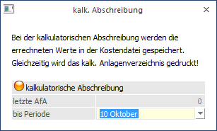

Um die kalkulatorische Abschreibung berechnen und buchen zu lassen, wählen Sie den Menüpunkt
1 Abschluss
1 Kalk. Abschreibung
Die Informationsfelder dieses Bildschirms zeigen Ihnen (vgl. dazu den Menüpunkt "Periodenabschreibung"), wann der letzte kalkulatorische AfA-Lauf durchgeführt wurde, und mit welchem Tagesdatum der neue Lauf erfolgen würde.
In diesem Programmteil wird die Abschreibungsberechnung auf Grund der kalkulatorischen Nutzungsdauer und des Wiederbeschaffungsbetrages durchgeführt. Der Wiederbeschaffungsbetrag errechnet sich auf Grund des Anschaffungswertes und des Anschaffungs- bzw. Wiederbeschaffungs-Indexes.
Die kalkulatorische Abschreibung wird solange durchgeführt, solange sich das Anlagegut im Bestand befindet, d.h. weder als Abgang gebucht wurde, noch die Nutzungsdauer auf 0 gesetzt wurde. Die kalkulatorische Abschreibung wird somit über die Nutzungsdauer hinweg abgeschrieben.
Die hier berechneten Abschreibungen werden direkt in die WinLine Kostenrechnung übergeben.
Überprüfung des Anlagenstammes - Stamm 2
Überprüfen Sie vor der Durchführung der kalk. Abschreibung, ob sämtliche kostenrelevanten Stammdaten angelegt wurden. Dazu steht ihnen die Anlagenliste oder das Programm Anlagen ohne Kosteninformationen zur Verfügung.

Ø Letzte AfA
Der letzte kalkulatorische AfA-Lauf wird angezeigt
Im Anlagenparameter ist immer die zuletzt durchgeführte kalk. AfA unter "Letzter AfA-Lauf" ersichtlich.
Ø bis Periode
Periode, bis zu der die kalkulatorische AfA berechnet und gebucht werden soll.
ü Die kalk. Abschreibung erfolgt immer von der letzten AfA bis zur eingetragenen Periode.
ü Bei der kalk. Abschreibung werden die errechneten Werte in den Stammdaten gespeichert. Gleichzeitig wird das kalkulatorische Anlagenverzeichnis gedruckt.
ü Im ersten Jahr der Inbetriebnahme wird die kalkulatorische Abschreibung anhand der gesamten Jahres-AfA auf die tatsächlich genutzten Monate aufgeteilt berechnet. Der erste Monat wird tagesgenau berechnet.
Achtung
Die kalkulatorische Abschreibung für die letzte Periode kann beliebig oft durchgeführt werden. Bei einer wiederholten kalk. Abschreibung werden die Differenzen zur letzten kalkulatorischen AfA ermittelt und in die KORE übergeben. Eine Wiederholung der kalkulatorischen Abschreibung für vergangene, bereits abgeschriebene Perioden ist nicht mehr möglich.
Nachträgliche Änderung der kalkulatorischen Stammdaten und die Auswirkung auf die kalkulatorische Abschreibung:
ü Nur die kalk. Nutzungsdauer wird
auf 0 gesetzt:
Berücksichtigung bei der nächsten kalk. Abschreibung, es wird
die bisherige Perioden-AfA negativ ausgebucht. Danach wird das Anlagegut nicht
mehr kalkulatorisch abgeschrieben.
ü Nur der Index und
Wiederbeschaffungsbetrag werden auf 0 gesetzt, die kalk. Nutzungsdauer bleibt
eingetragen:
Bei der nächsten kalk. Abschreibung wird dieses Anlagegut nicht
berücksichtigt, es erfolgt auch keine Korrektur der bisherigen Perioden-AfA.
ü Kalk. Nutzungsdauer, Index und
Wiederbeschaffungsbetrag werden auf 0 gesetzt:
Bei der nächsten kalk.
Abschreibung wird dieses Anlagegut nicht berücksichtigt, es erfolgt auch keine
Korrektur der bisherigen Perioden-AfA.
ü Nur der Wiederbeschaffungsbetrag
wird auf 0 gesetzt, Index und kalk. Nutzungsdauer bleiben unverändert:
Das
Anlagegut nimmt unverändert weiterhin an der kalk. Abschreibung teil.